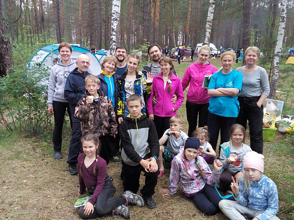
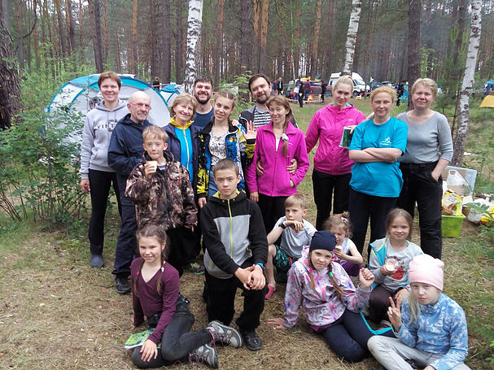
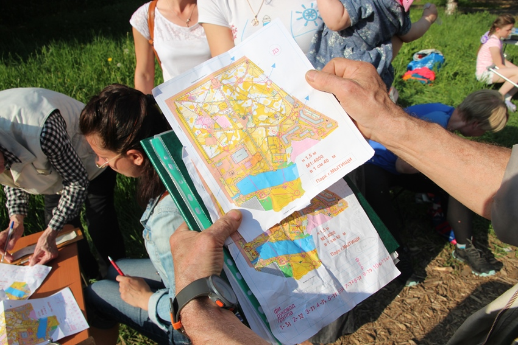
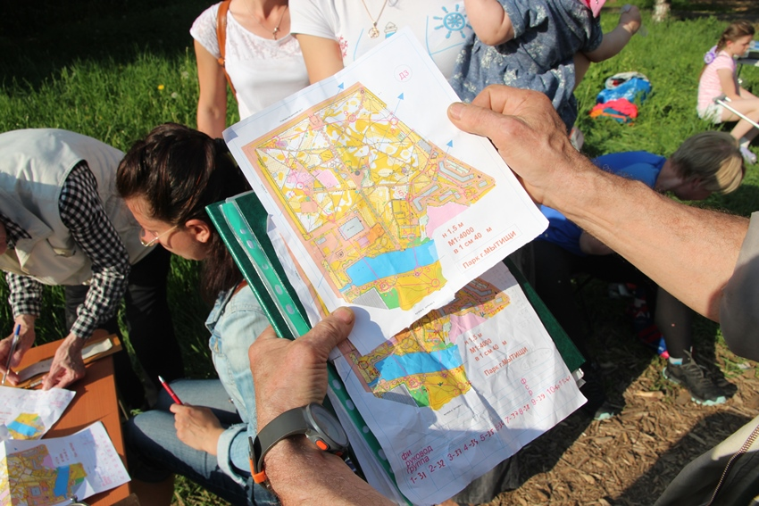

Клуб спортивного ориентирования и туризма "АЗИМУТ МЫТИЩИ"

Мы в соцсетях:
В клубе Спортивного Ориентирования и Туризма "Азимут-Мытищи" прошёл праздник посвящённый наступлению Нового 2019 Года!
КСО "АЗИМУТ МЫТИЩИ" провёл очередной чемпионат города по спортивному ориентированию. Соревнования проходили в Лосиноостровском лесопарке и принять в них участия могли вс желающие.
Закончился 9ый (с нашим участием) " Вачский азимут". Как всегда сложные карты с карстовым рельефом, интересные техничные дистанции и много мероприятий помимо-лабиринт, концерт, экскурсия. Хорошая атмосфера в лагере, вкусная еда (спасибо всем!), посиделки у костра, купание для желающих в чистом карстовом озере, спектаклик в стихах на экологическую тему- все было хорошо. 13 медалей - неплохой улов! А главное - все " подросли" в ориентировании. Ура!
 
 В центральном парке г. Мытищи участники клуба спортивного ориентирования и туризма «Азимут» провели открытое первенство, посвящённое Всемирному дню ориентирования и четырёхлетию клуба. Спортивное ориентирование развивает внимание, прививает самостоятельность, ведь недаром этот вид спорта называют «шахматы в лесу». Спортивный ориентировщик - универсальный спортсмен. В течение года представители клуба выезжают на всероссийские соревнования. В «Азимуте» семь перворазрядников, есть и велоориентировщики. «Суть ориентирования состоит в том, чтобы каждый участник сам для себя определил кратчайший путь к цели и прошёл его», - пояснил руководитель, тренер-преподаватель клуба, мастер спорта по спортивному ориентированию Владимир Жучков. Он также отметил, что спортивное ориентирование – сложный вид спорта, требующий абстрактного мышления: «Ориентировщик словно пребывает в трёх мирах: с одной стороны перед ним – географическая карта местности, с другой – он представляет, как будет преодолевать дистанцию, а, когда начинает её проходить, то видит реальную картину местности». При помощи географической карты парка, с компасом в руках участники преодолевали дистанции в заданном направлении. Победу в соревновании одержали: в возрастной группе 11 лет и моложе - Павел Голубев, Анастасия Курдюкова; 12-15 лет – Андрей Амирханян, Анна Туз; в старшей возрастной группе - Антон Нестеров, Дарья Есипова.


 
